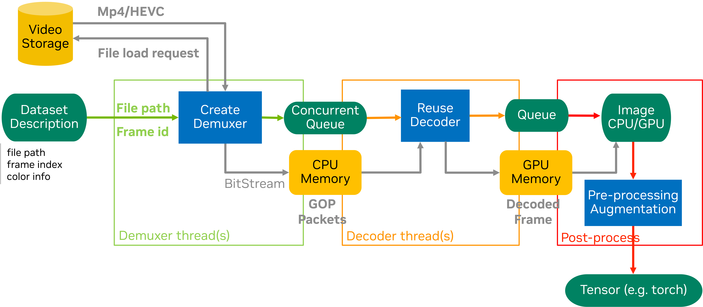

DataLoader Random Decode Example
Overview
This example demonstrates how to use NVIDIA’s accvlab.on_demand_video_decoder library with PyTorch DataLoader for efficient random frame extraction from random videos in batch form, ideal for training scenarios that require diverse sampling patterns.
The specific code implementation can be found in packages/on_demand_video_decoder/examples/dataloader_random_decode.

Key Features
Custom PyTorch Dataset: Implements lazy initialization of the GOP decoder to support multiple processes
Custom Sampler: Organizes random video clips into batches for efficient processing with distributed training support
Multi-camera Support: Handles synchronized frames from multiple cameras with random access
Distributed Training: Compatible with PyTorch’s distributed training framework
Performance Profiling: Includes NVTX markers for performance analysis
Error Handling: Comprehensive error handling and validation
Random Access Decoding: GOP-based random frame extraction optimized for training diversity
Index Data Format
Note
The JSON file and the selection of frames to access are used here for demonstration purposes. In a real-world scenario, the file names and indices would be obtained from the dataset metadata.
The example expects a JSON file with the following structure:
{
"video_dir1": {
"clip0id": frame_count,
"clip1id": frame_count,
...
},
"video_dir2": {
"clip0id": frame_count,
"clip1id": frame_count,
...
}
}
Each video directory should contain subdirectories for each clip, and each clip directory should contain MP4 files for different cameras.
Data Loading Structure
The data loading process follows a hierarchical structure optimized for random access and maximum diversity:
Random Sampling Dimension
┌─────────────────────────────────────────────────────────────────────────────┐
│ RANDOM DECODING PIPELINE │
│ (GOP-based Random Frame Access) │
└─────────────────────────────────────────────────────────────────────────────┘
Batch Dimension (group_num clips per batch, fixed) - Random Sampling
├── Batch 0 (e.g., 4 clips)
│ ├─→ Random Clip A (from video_dir3/clip7)
│ │ └─→ Random Frame 8 → [cam0_f8, cam1_f8, cam2_f8, cam3_f8, cam4_f8, cam5_f8 ]
│ │
│ ├─→ Random Clip B (from video_dir1/clip2)
│ │ └─→ Random Frame 5 → [cam0_f5, cam1_f5, cam2_f5, cam3_f5, cam4_f5, cam5_f5 ]
│ │
│ ├─→ Random Clip C (from video_dir7/clip4)
│ │ └─→ Random Frame 12 → [cam0_f12, cam1_f12, cam2_f12, cam3_f12, cam4_f12, cam5_f12]
│ │
│ └─→ Random Clip D (from video_dir2/clip9)
│ └─→ Random Frame 61 → [cam0_f61, cam1_f61, cam2_f61, cam3_f61, cam4_f61, cam5_f61]
│
├── Batch 1 (e.g., 4 clips)
│ ├─→ Random Clip E (from video_dir5/clip1)
│ │ └─→ Random Frame 47 → [cam0_f47, cam1_f47, cam2_f47, cam3_f47, cam4_f47, cam5_f47]
│ │
│ ├─→ Random Clip F (from video_dir4/clip6)
│ │ └─→ Random Frame 55 → [cam0_f55, cam1_f55, cam2_f55, cam3_f55, cam4_f55, cam5_f55]
│ │
│ ├─→ Random Clip G (from video_dir8/clip3)
│ │ └─→ Random Frame 31 → [cam0_f31, cam1_f31, cam2_f31, cam3_f31, cam4_f31, cam5_f31]
│ │
│ └─→ Random Clip H (from video_dir6/clip5)
│ └─→ Random Frame 3 → [cam0_f3, cam1_f3, cam2_f3, cam3_f3, cam4_f3, cam5_f3 ]
│
└── ... (continues with random sampling)
Data Flow with Random Access:
Random Selection → Batch → Random Clip → Random Frame_ID → Synchronized Multi-camera frames
↓ ↓ ↓ ↓ ↓
Shuffled group_num Different Non-sequential [cam0, cam1, cam2, ...] (fixed num)
clips (fixed size) video dirs frame IDs all at same frame_id
Random Access Dimension Details:
Random Selection: Clips are randomly sampled from the entire dataset (no temporal ordering)
Batch: Contains
group_numrandomly selected clips (batch size is fixed)Random Clip: Each clip is independently sampled from potentially different video directories
Random Frame_ID: Frame indices within each clip are accessed randomly (non-sequential across calls)
Multi-camera: Fixed number of synchronized cameras, all accessing the same frame index simultaneously
Example: If frame_id=15 is requested, all cameras (cam0, cam1, cam2, …, cam5) decode frame 15
Camera count remains constant across all clips and batches
Random Access Benefits:
Training Diversity: Maximizes data variety by sampling from different videos and frames
Better Generalization: Prevents temporal bias by breaking sequential patterns
Efficient GOP Decoding: Leverages GOP structure for fast random frame access
Flexible Sampling: Supports various sampling strategies (uniform, weighted, etc.)
Reduced Overfitting: Random access patterns improve model robustness
Usage
Basic Usage
python main.py --index_file /path/to/index_frame.json --group_num 4 --num_workers 2
Distributed Training
python -m torch.distributed.run --nproc_per_node=2 main.py --index_file /path/to/index_frame.json --group_num 4 --num_workers 2
Command Line Arguments
--index_file: Path to the JSON file containing frame index information (default:example/index_frame.json)--group_num: Number of clips to process in each batch (default: 4)--num_workers: Number of worker processes for data loading (default: 2)
Architecture
VideoClipDataset
The VideoClipDataset class extends PyTorch’s Dataset and provides:
Lazy initialization of the NVIDIA GOP decoder
GPU-accelerated random frame decoding
Multi-camera frame synchronization with random access
Error handling and validation
Random Decoder Configuration (
nvc.CreateGopDecoder):maxfiles: Maximum number of video files to keep open simultaneouslyiGpu: GPU device ID for decoding
Implementation:
136# .. doc-marker-begin: dataset-random
137class VideoClipDataset(Dataset):
138 """
139 PyTorch Dataset for video clip decoding using ``accvlab.on_demand_video_decoder``.
140
141 This dataset provides GPU-accelerated video decoding capabilities with lazy
142 initialization of the decoder to optimize memory usage. It supports multi-camera
143 video clips and is designed for distributed training scenarios.
144
145 This implementation uses CreateGopDecoder for random access.
146
147 Attributes:
148 device_id: GPU device ID for decoder initialization
149 index_frame: Frame index information loaded from JSON
150 num_cameras: Number of cameras per clip
151 group_num: Number of clips to process in each batch
152 use_fast_init: Whether to use fast initialization with GetFastInitInfo
153 _is_initialized: Flag indicating if decoder has been initialized
154 _nvc_decoder: NVIDIA video decoder instance (CreateGopDecoder)
155 fast_stream_infos: Fast initialization info for decoder
156 """
157
158 def __init__(
159 self,
160 index_frame: Dict[str, Dict[str, int]],
161 group_num: int,
162 device_id: int,
163 num_cameras: int = NUM_CAMERAS,
164 use_fast_init: bool = False,
165 ):
166 """
167 Initialize the VideoClipDataset for random access.
168
169 Args:
170 index_frame: Frame index information from JSON file
171 group_num: Number of clips to process in each batch
172 device_id: GPU device ID for decoder initialization
173 num_cameras: Number of cameras per clip (default: 6)
174 use_fast_init: Whether to use fast initialization (default: False)
175 """
176 self.device_id = device_id
177 self.index_frame = index_frame
178 self.num_cameras = num_cameras
179 self.group_num = group_num
180 self._is_initialized = False
181 self._nvc_decoder = None
182 self._use_fast_init = use_fast_init
183 self.fast_stream_infos = None
184
185 def __len__(self) -> int:
186 """
187 Get the total number of batches in the dataset.
188
189 Returns:
190 Total number of batches (total frames // group_num)
191 """
192 total_frames = 0
193 for video_dir, clip_info in self.index_frame.items():
194 for clip_id, frame_count in clip_info.items():
195 total_frames += frame_count
196
197 return total_frames // self.group_num
198
199 def _lazy_init(self, index) -> None:
200 """
201 Lazy initialize the NVIDIA video decoder (CreateGopDecoder).
202
203 This method initializes the decoder only when first needed, which helps
204 optimize memory usage and startup time.
205 """
206 if self._is_initialized:
207 return
208
209 try:
210 self._nvc_decoder = nvc.CreateGopDecoder(
211 maxfiles=self.num_cameras, # Maximum number of files to use
212 iGpu=self.device_id, # GPU ID
213 )
214 if self._use_fast_init:
215 file_lists = [
216 os.path.join(index[0][0], f) for f in os.listdir(index[0][0]) if f.endswith('.mp4')
217 ]
218 self.fast_stream_infos = nvc.GetFastInitInfo(file_lists)
219
220 self._is_initialized = True
221 print(f"Random video decoder (CreateGopDecoder) initialized on GPU {self.device_id}")
222 except Exception as e:
223 raise RuntimeError(f"Failed to initialize random video decoder on GPU {self.device_id}: {e}")
224
225 def __getitem__(self, index: List[Tuple[str, int]]) -> List[List[torch.Tensor]]:
226 """
227 Get a batch of video frames for the given index.
228
229 Args:
230 index: List of tuples containing (clip_path, frame_idx) pairs
231
232 Returns:
233 List of lists of decoded video frames as PyTorch tensors
234
235 Raises:
236 RuntimeError: If decoder initialization fails
237 ValueError: If input index format is invalid
238 """
239 if not isinstance(index, list):
240 raise ValueError(f"Expected list of tuples, got {type(index)}")
241
242 self._lazy_init(index)
243 decoded_batch = []
244
245 for clip_path, frame_idx, _ in index:
246 try:
247 # Find all MP4 files in the clip directory
248 video_paths = [
249 os.path.join(clip_path, f) for f in os.listdir(clip_path) if f.endswith('.mp4')
250 ]
251
252 if not video_paths:
253 raise ValueError(f"No MP4 files found in {clip_path}")
254
255 # Create frame index list for all videos (same frame for synchronized cameras)
256 frame_indices = [frame_idx] * len(video_paths)
257
258 # Decode frames from all cameras using CreateGopDecoder
259 if self._use_fast_init:
260 decoded_frames = self._nvc_decoder.DecodeN12ToRGB(
261 video_paths, frame_indices, True, self.fast_stream_infos
262 )
263 else:
264 decoded_frames = self._nvc_decoder.DecodeN12ToRGB(video_paths, frame_indices)
265
266 # Convert to PyTorch tensors and add batch dimension
267 frame_tensors = [
268 torch.unsqueeze(torch.as_tensor(df, device=f'cuda:{self.device_id}'), 0)
269 for df in decoded_frames
270 ]
271
272 decoded_batch.append(frame_tensors)
273
274 except Exception as e:
275 raise RuntimeError(f"Failed to decode frames from {clip_path}: {e}")
276
277 return decoded_batch
278
279
VideoClipSampler
The VideoClipSampler class extends PyTorch’s Sampler and provides:
Random clip selection across the entire dataset
Efficient batch organization with diversity
Distributed training support with proper sharding
Shuffling support for each epoch
Example Training Loop
The following code shows the complete setup for training with random frame access:
323 # .. doc-marker-begin: training-setup-random
324 # Load frame index information
325 index_frame = load_index_frame(args.index_file)
326 print(f"Loaded index frame with {len(index_frame)} video directories")
327
328 # Create dataset and dataloader for random access
329 dataset = VideoClipDataset(
330 index_frame=index_frame,
331 group_num=args.group_num,
332 device_id=local_rank,
333 use_fast_init=args.use_fast_init,
334 )
335
336 # Use random sampler for random access
337 sampler = video_clip_sampler.VideoClipSamplerRandom(
338 index_frame=index_frame, group_num=args.group_num, rank=local_rank, world_size=local_world_size
339 )
340
341 dataloader = DataLoader(
342 dataset, batch_size=1, sampler=sampler, num_workers=args.num_workers, pin_memory=False
343 )
344
345 loader_iter = iter(dataloader)
346
347 # Warmup phase
348 print(f"\nStarting warmup phase ({WARMUP_ITERATIONS} iterations)...")
349 for i in range(WARMUP_ITERATIONS):
350 nvtx.range_push(f"warmup_batch_{i}")
351
352 nvtx.range_push("next_batch")
353 batch = next(loader_iter)
354 nvtx.range_pop() # next_batch
355
356 nvtx.range_pop() # warmup_batch_{i}
357 print(f"Warmup {i + 1}/{WARMUP_ITERATIONS} completed")
358
359 # Performance benchmark phase
360 print(f"\nStarting performance benchmark...")
361 started_at = time.perf_counter()
362 current_time = 0
363 frame_loaded = 0
364 samples_loaded = 0
365 batches_loaded = 0
366 load_gaps = []
367 load_started_at = time.perf_counter()
368
369 i = 0
370 while True:
371 nvtx.range_push(f"batch_{i}")
372
373 nvtx.range_push("next_batch")
374 try:
375 batch = next(loader_iter)
376 except StopIteration:
377 break
378 nvtx.range_pop() # next_batch
379
380 # Process batch (example: print shape of first frame)
381 # print(f"Batch {i}: Frame shape {batch[0][0].shape}")
382
383 nvtx.range_push("load_batch")
384 load_ended_at = time.perf_counter()
385 load_gaps.append(load_ended_at - load_started_at)
386 load_started_at = time.perf_counter()
387
388 batches_loaded += 1
389 samples_loaded += args.group_num
390 frame_loaded += NUM_CAMERAS * args.group_num
391
392 current_time = time.perf_counter()
393
394 if i % PROGRESS_REPORT_INTERVAL == 0:
395 elapsed_time = current_time - started_at
396 throughput_fps = frame_loaded / elapsed_time if elapsed_time > 0 else 0
397 throughput_samples = samples_loaded / elapsed_time if elapsed_time > 0 else 0
398
399 print(f"Batch: {i} - {len(batch)} frames in {load_gaps[-1]:.4f} seconds")
400 print(f"Elapsed time: {elapsed_time:.4f}s")
401 print(f"Samples loaded: {samples_loaded}")
402 print(f"Throughput: {throughput_fps:.2f} frames/second, {throughput_samples:.2f} samples/second")
403
404 nvtx.range_pop() # load_batch
405 nvtx.range_pop() # batch_{i}
406
407 i += 1
408
409 # Final performance report
410 # ended_at = time.perf_counter()
411 ended_at = current_time
412 total_time = ended_at - started_at
413
414 print(f"\n=== Performance Summary ===")
415 print(f"Frames loaded: {frame_loaded}")
416 print(f"Time taken: {total_time:.2f} seconds")
417 print(f"Throughput: {frame_loaded / total_time:.2f} frames per second")
418 print(f"Throughput: {samples_loaded / total_time:.2f} samples per second")
419 print(f"Throughput: {batches_loaded / total_time:.2f} batches per second")
420 print(f"Number of workers: {args.num_workers}")
421
422 if load_gaps:
423 avg_load_time = sum(load_gaps) / len(load_gaps)
424 print(f"Average batch load time: {avg_load_time:.4f} seconds")
Performance
Test Environment
GPU: NVIDIA A100-SXM4-80GB
CPU: AMD EPYC 7J13 64-Core Processor
Storage: NFS
DataSet: NuScenes-mini, 10 clips, 6 cameras, H.265, 1600x900, GOP_SIZE=30, non-bframe
Performance Metrics (frames/sec)
Using the Random Access API, measure the throughput (frames per second) when accessing random frames and streaming frames.
configuration |
random frames |
stream frames |
|---|---|---|
1 GPU |
381.1 |
389.89 |
2 GPU |
754.34 |
772.42 |
4 GPU |
1518.15 |
1544.81 |
8 GPU |
3065.5 |
3094.21 |
Performance Optimization Tips
Spawn Mode: PyTorch must be set to spawn mode when using GPU (NvCodec) within the DataLoader
GPU Memory: Each worker maintains its own CUDA context, which can lead to increased GPU memory usage
Batch Size: Adjust
group_numbased on available GPU memoryWorker Processes: Adjust
num_workersbased on CPU cores and I/O requirementsRandom Access Overhead: Random frame access may be slower than sequential access due to GOP seeking
GOP Size Impact: Smaller and fixed GOP sizes enable finer random access but may reduce compression efficiency
File Handle Management: The
maxfilesparameter controls how many video files stay open; tune based on dataset sizeCache Locality: Random access patterns may have lower cache hit rates compared to sequential access
Performance Profiling
Use NVIDIA Nsight Systems for detailed performance analysis:
nsys profile --trace-fork-before-exec true -w true -f true -t cuda,nvtx,osrt,cudnn,cublas,nvvideo --gpu-video-device all -x true -o dataloader_random_decode python main.py --index_file /path/to/index_frame.json